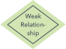
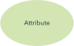
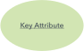

Entity ehk olem - Määratletav asi - näiteks inimene, objekt, mõiste või sündmus, mille kohta võib andmeid salvestada.
Olemitele võib mõelda kui nimisõnadele. Näiteks klient, õpilane, auto või toode.
Tavaliselt kujutatakse ristkülikuna.

Relationship ehk suhe - Kuidas olemid üksteisele mõjuvad või on omavahel seotud.
Suhetele võib mõelda kui tegusõnadele.
Näiteks võib mingi õpilane registreeruda end mingile kursusele. Olemiteks oleksid õpilane ja kursus
ning suhe oleks registreerumise akt, mis ühendab kahte olemit.
Suhteid kujutatakse tavaliselt teemantidena või label'itena otse ühendusliinidel.


Attribute ehk atribuut - Olemi omadus või tunnus.
Atribuute kujutatakse tavaliselt ovaali või ringina
Cardinality ehk kardinaalsus - Määratleb kahe olemi või olemikogumi vahelise seose numbrilised atribuudid.
Kolm peamist kardinaalset suhet on one-to-one, one-to-many ja many-many.
One-to-one näide oleks õpilane, kes on seotud ühe postiaadressiga.
One-to-many (või many-to-one, olenevalt suhte suunast) näide oleks õpilane, kes registreerub mitmele kursusele
Many-to-many näide: Õpilased kui rühm on seotud mitme õppejõuga ja õppejõud omakorda mitme õpilasega.